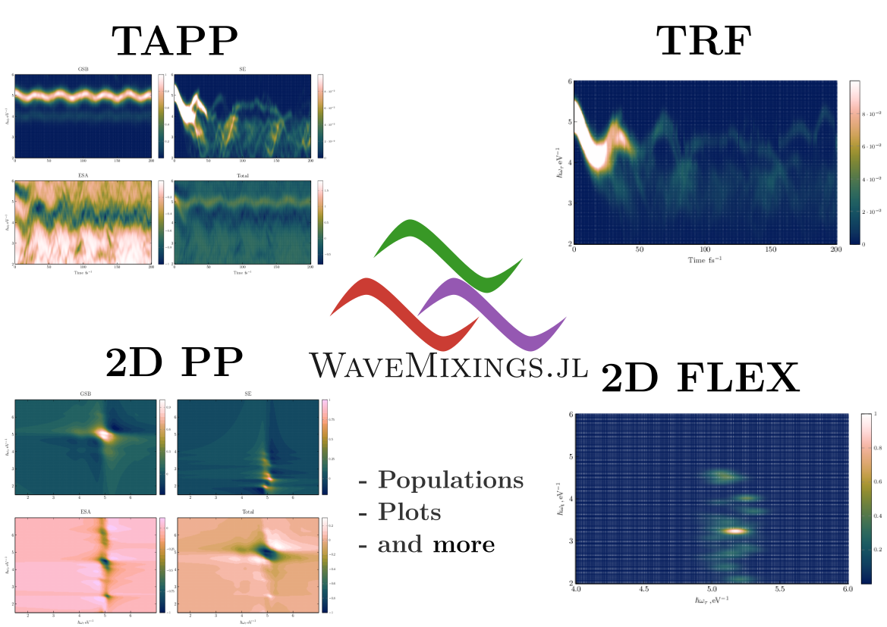

title: Distributed Computing (WIP)
details: Distribute the computation over multiple nodes (e.g., HPC).
link: /users_guide/cluster
---
title: Distributed Computing (WIP)
details: Distribute the computation over multiple nodes (e.g., HPC).
link: /users_guide/cluster
---WaveMixings.jl
WaveMixings.jl is Julia package with an efficient numerical implementation of the quasi-classical doorway-window approximation, specifically designed for on-the-fly simulations of time-resolved nonlinear spectroscopic signals. The code takes as input quasi-classical trajectory data (energies of electronic states and transition dipole moments between elecronic states) as function of discretized time, which may be provided by any nonadiabatic quasi-classical dynamics package. The output of WaveMixings.jl are raw spectroscopic data, that is, spectral intensities as functions one or more frequencies and pump-probe delay time. The package contains modules that facilitate standard tasks such as input/output data handling, data filtering, and post-processing, among others.
WaveMixings.jl includes implementations of various signals, including integral and dispersed transient absorption pump-probe signals, time- and frequency-resolved fluorescence spectra, strong-field spectra, and two-dimensional electronic spectra. By developing WaveMixings.jl we aim to create a versatile platform to perform simulations and develop new methodologies within the quasi-classical doorway-window framework. WaveMixings.jl differs from other existing codes for the simulation of nonlinear time-resolved spectra by the explicit inclusion of the shapes and durations of the laser pulses.
WaveMixings.jl includes several auxiliary functions for pre- and posprocesing of data (input and simulation results). Some worth mentioning functions are read_matrix, read_matrix, and read_matrix. WaveMixings.jl avoids wrapping functions of other packages where possible, thus offering maximum speed of the calculations.

We believe that WaveMixings.jl will be a valuable tool for researchers working in different fields such as quantum dynamics, spectroscopy, nonlinear optics, and condensed matter physics.
If you like WaveMixings.jl and find the framework useful in your research, we kindly ask you to cite our publication [WaveMixings.jl][bib1] using the bibtex entry here.